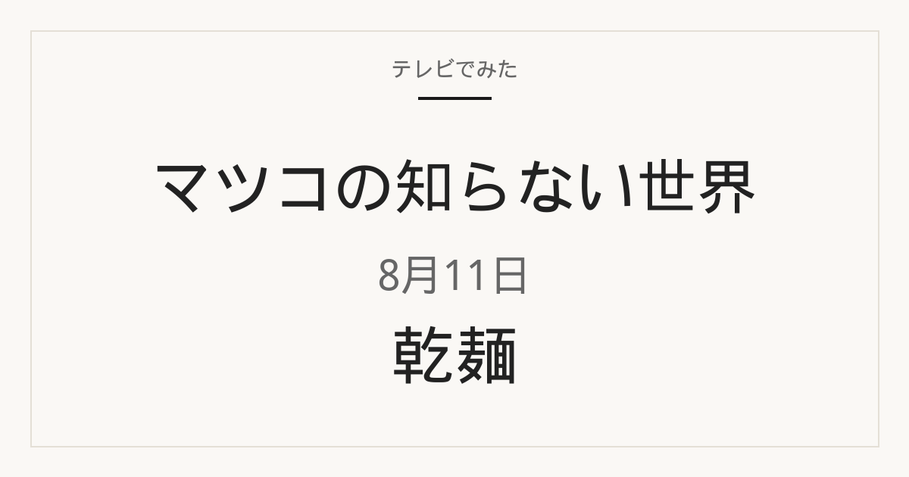

マツコの知らない世界 乾麺｜2026年8月11日

2026年8月11日放送の「マツコの知らない世界」では、乾麺の世界を特集。300種類以上のご当地乾麺をストックする南野マキさんが登場し、乾麺の魅力を「にゅるみ」という南野さんオリジナルの観点から語ったと、TBS公式アーカイブは案内しています。ご当地乾麺のルーツから、技術の進歩で進化したご当地の乾麺までが紹介されました。
この記事はTBS公式の放送アーカイブを基準に、番組で紹介された商品名と放送時点の価格を確認しています。掲載するのは、公式アーカイブで確認できた商品のうち、楽天市場で同一商品を確認できた2点です。店頭や通販では在庫切れ、販売終了、仕様・価格変更の場合があります。楽天市場ではセット販売や送料により放送時点の価格と異なることがあるため、数量と総額をご確認ください。

放送時価格 1,000円（TBS公式）
渡辺手延製麺所
1．手延ひやむぎ 3束
TBS公式では三重県の渡辺手延製麺所「手延ひやむぎ 3束」として紹介された、手延べの乾麺です。メーカー公式では金魚印の大矢知手延ひやむぎとして案内され、3束入り（225g×3）を手土産向けの数量として掲載しています。うどんやきしめんではなく、ひやむぎとして使う商品です。
向いている用途：冷やして食べるひやむぎを、常温保存できる乾麺で用意したいときに候補になります。公式では夏でも冬でも使う手延べ干し麺と案内されています。3束なので、まず少量から試したいときにも向きやすい数量です。
選ぶポイント：同じ渡辺手延製麺所でも、そうめん・うどん・きしめんや束数違いがあります。番組で紹介されたのは「手延ひやむぎ」の3束です。公式では低温で乾燥と戻しを繰り返す製法と、小麦粉をブレンドした手延べ麺であることが案内されています。
使用時の注意：ゆで時間、塩分、アレルギー原材料はパッケージ表示に従ってください。乾麺は開封後ににおいを吸着しやすいことがあるため、保管場所も表示を確認します。通販では束数やつゆ付きセットの出品もあるので、3束の乾麺本体かを見てください。
楽天で見る

放送時価格 284円（TBS公式）
金トビ志賀
2．名古屋きしめん 250g
TBS公式では愛知県の金トビ志賀「名古屋きしめん 250g」として紹介されました。メーカー公式では、1袋250gをたっぷり2人前とし、めん線に凹凸を付ける波切り製法の幅広きしめんと案内されています。公式ではつゆは付かないため、別途めんつゆを用意する商品です。
向いている用途：冷やして食べるころきしめんなど、幅広のきしめんを乾麺で用意したいときに候補になります。公式でも、ゆでて冷水でしめて食べる食べ方が案内されています。
選ぶポイント：同じメーカーの別の乾麺とパッケージが近いことがあります。番組で紹介されたのは「名古屋きしめん」の250gです。公式通販では5袋・10袋などの段ボール単位もあるため、1袋250gなのかセットなのかを確認してください。公式では季節で青白／赤白パッケージが分かれる案内もあります。
使用時の注意：公式の原材料は小麦粉（小麦（愛知県産））と食塩で、アレルギー表示は小麦です。ゆで方と人数分の目安はパッケージ表示に従ってください。つゆ付きセットと取り違えないよう、商品名と内容量を再確認してください。
楽天で見る
目的別に選ぶならどれ？
冷やして食べる細めの麺を探している
「手延ひやむぎ 3束」は、手延べのひやむぎです。幅広のきしめんではなく、ひやむぎの太さで冷やして食べたい場合の候補です。
名古屋の幅広きしめんを用意したい
「名古屋きしめん 250g」は、メーカー公式でも幅広のめん線ときしめんの食べ方が案内されています。公式では1袋を2人前の目安としています。つゆは別途用意します。
まず少ない数量から試したい
ひやむぎは3束、きしめんは250g（公式では2人前目安）です。同じ商品の大袋や段ボール単位と取り違えないよう、入数を確認してください。
保存しておきたい乾麺を探している
どちらも乾麺なので、冷凍パンと違い常温保存が基本です。開封後の扱いと賞味期限はパッケージ表示が基準です。効果やランキングは断定できません。
よくある質問
マツコの知らない世界で紹介された乾麺はどれ？
2026年8月11日の放送では、乾麺の世界が特集されました。この記事では、TBS公式の放送アーカイブで確認できた商品のうち、楽天市場で同一商品を確認できた2点をまとめています。
マツコの知らない世界 乾麺の放送日は？
2026年8月11日（火）放送のマツコの知らない世界です。テーマは乾麺の世界でした。
放送時点の価格はいくら？
TBS公式アーカイブでは、渡辺手延製麺所の手延ひやむぎ3束が1,000円、金トビ志賀の名古屋きしめん250gが284円です。現在の価格や取り扱いは販売ページでご確認ください。
楽天市場でも同じ価格で買える？
同じとは限りません。楽天市場では複数個セットで販売され、商品代とは別に送料がかかる場合もあります。店頭購入と通販で使い分けてください。
出典と確認方法
番組名、放送日、紹介された商品名、放送時点の価格はTBS公式アーカイブを基準に確認しました。用途と選び方は、効果を断定しないよう公開情報をもとに編集部で整理しています。
商品リンクには広告リンクを含みます。番組映像や字幕は転載せず、公開情報をもとに独自に要約しています。